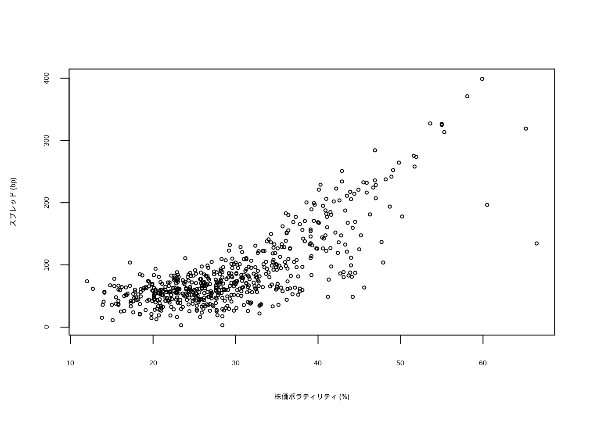
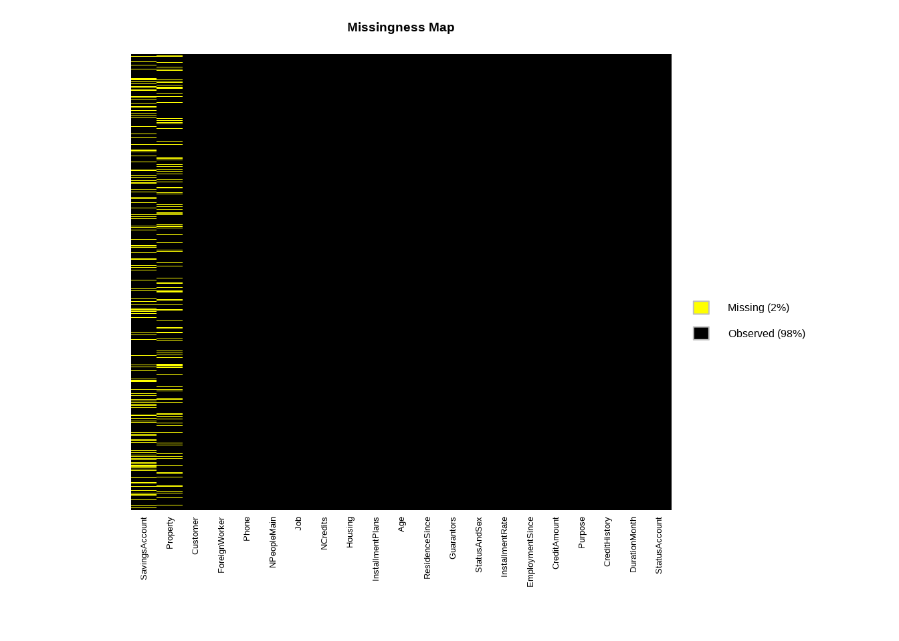
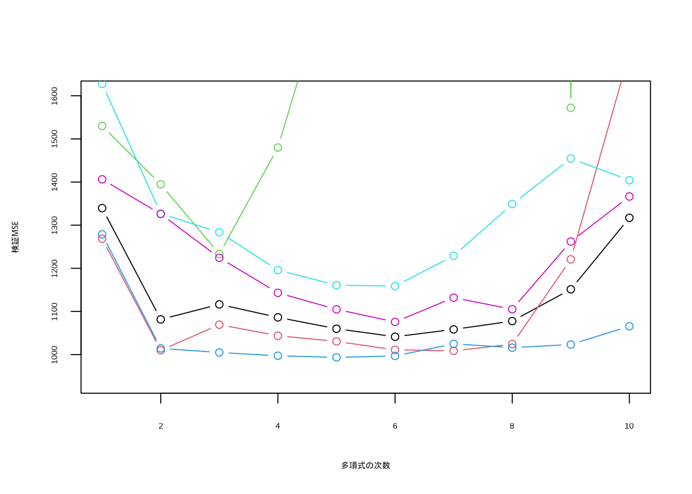
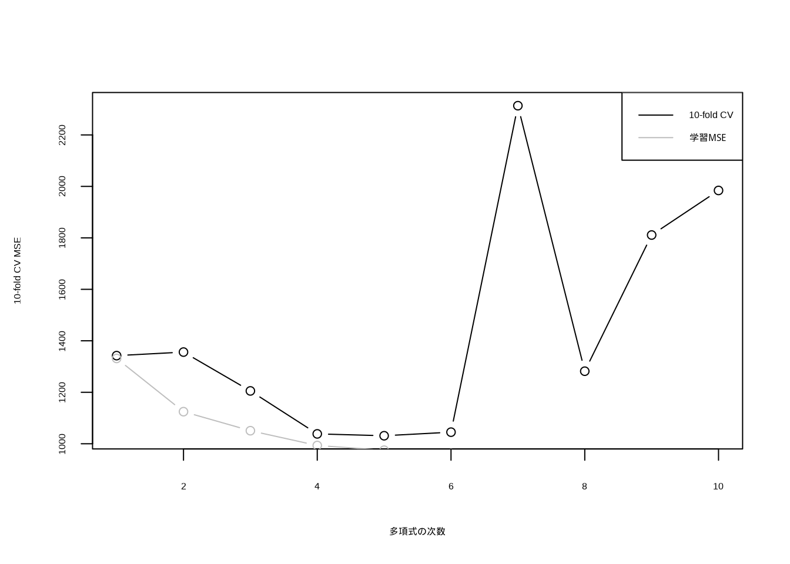

Chapter 7 回帰モデルの評価と交差検証
本章の内容は, スライド「回帰モデルの評価」と, R 演習スクリプト R_cv_dist.R に対応する (授業では R 演習は行わなかったので, 自習用).
前章の正則化回帰では, 交差検証 (cv.glmnet()) で正則化パラメータ \(\lambda\) を選んだ. 本章では, 回帰モデルの予測精度の評価と, 交差検証の考え方を基礎から確認する.
※ 本章の分析の流れは, ISLR2, Ch.5 (Lab: Cross-Validation) を参考にした.
7.1 学習誤差と予測誤差
データ: 社債の信用スプレッド (仮想)
GAM の章と同じ社債の信用スプレッド・データを使う.
- bond_spread.csv, 600銘柄
- spread: 信用スプレッド (国債利回りとの差, bp) (目的変数)
- equity_vol: 発行体の株価ボラティリティ (年率, %)
- ほか: leverage, maturity, log_assets, industryここでは, 「スプレッドを株価ボラティリティの何次の多項式で予測するのが良いか」を, 予測誤差の観点から選ぶ.
bond <- read.csv("class/bond_spread.csv")
plot(bond$equity_vol, bond$spread, cex = 0.5, xlab = "株価ボラティリティ (%)",
ylab = "スプレッド (bp)")
学習誤差はモデルを複雑にするほど下がる
モデルを推定したデータ (学習データ) に対する誤差 (学習MSE) は, 多項式の次数を上げてモデルを複雑にするほど, 必ず小さくなる.
train_mse <- sapply(1:10, function(d) {
fit <- lm(spread ~ poly(equity_vol, d), data = bond)
mean(resid(fit)^2)
})
plot(1:10, train_mse, type = "b", xlab = "多項式の次数", ylab = "学習MSE")
しかし, 私たちが知りたいのは, まだ見ていない新しいデータに対する予測の誤差 (予測誤差, テスト誤差) である. 複雑すぎるモデルは, 学習データの偶然の変動 (ノイズ) まで当てはめてしまい, 新しいデータに対しては予測が悪くなる (過学習). 予測誤差を推定するには, モデルの推定に使わなかったデータで評価する必要がある.
7.2 検証用セット・アプローチ
データを学習用と検証用にランダムに分け, 学習用データで推定したモデルを, 検証用データで評価する (hold-out 法).
set.seed(1)
train <- sample(nrow(bond), nrow(bond)/2) # 半分を学習用, 残りを検証用
val_mse <- sapply(1:10, function(d) {
fit <- lm(spread ~ poly(equity_vol, d), data = bond, subset = train)
pred <- predict(fit, newdata = bond[-train, ])
mean((bond$spread[-train] - pred)^2) # 検証用データでの MSE
})
round(val_mse, 1)
#> [1] 1339.6 1081.6 1116.4 1086.3 1059.9 1041.3 1058.3 1077.6 1151.3 1317.1
which.min(val_mse)
#> [1] 6検証MSE は, 1次から2次で大きく下がり, その後はほぼ横ばいで, 次数が高すぎると再び上がる.
検証用セット・アプローチの弱点は, 結果がデータの分割の仕方に依存することである. 分割を変えて (乱数の種を変えて) 繰り返すと, 検証MSE の曲線は大きくばらつく. また, データの半分しか学習に使わないので, 予測誤差を過大に推定しがちである.
plot(1:10, val_mse, type = "b", ylim = range(val_mse) * c(0.9, 1.2), xlab = "多項式の次数",
ylab = "検証MSE")
for (s in 2:6) {
set.seed(s)
tr <- sample(nrow(bond), nrow(bond)/2)
v <- sapply(1:10, function(d) {
fit <- lm(spread ~ poly(equity_vol, d), data = bond, subset = tr)
mean((bond$spread[-tr] - predict(fit, bond[-tr, ]))^2)
})
lines(1:10, v, col = s, type = "b")
}
7.3 交差検証
LOOCV (1個抜き交差検証)
LOOCV (leave-one-out cross-validation) は, データの1点を検証用に取り出し, 残りの \(n-1\) 点でモデルを推定して, 取り出した点を予測する. これを全ての点について繰り返し, 予測誤差の平均をとる. \[ CV_{(n)} = \frac{1}{n} \sum_{i=1}^{n} (y_i - \hat{y}_{(-i)})^2 \] (\(\hat{y}_{(-i)}\): \(i\) 番目の点を除いて推定したモデルによる, \(i\) 番目の点の予測値). 分割の仕方による変動がなく, ほぼ全てのデータを学習に使える.
パッケージbootの関数cv.glm()を使う. glm()でfamilyを指定しなければ, lm()と同じ (最小二乗法) になる.
library(boot)
glm_fit <- glm(spread ~ equity_vol, data = bond)
cv_err <- cv.glm(bond, glm_fit)
cv_err$delta # 1つ目: LOOCV による予測MSEの推定値 (2つ目は補正版)
#> [1] 1349.141 1349.126
loocv_mse <- sapply(1:6, function(d) {
fit <- glm(spread ~ poly(equity_vol, d), data = bond)
cv.glm(bond, fit)$delta[1]
})
round(loocv_mse, 1)
#> [1] 1349.1 1192.3 1138.6 1073.3 1055.7 1048.4LOOCV はモデルを \(n\) 回推定するので, データが大きいと計算に時間がかかる.
k-分割交差検証 (k-fold CV)
k-分割交差検証は, データを \(k\) 個のグループ (fold) にランダムに分け, 1つの fold を検証用, 残りを学習用として予測誤差を求めることを, \(k\) 回 (検証用の fold を入れ替えて) 繰り返し, 平均をとる.
\[
CV_{(k)} = \frac{1}{k} \sum_{j=1}^{k} \mathrm{MSE}_j
\]
\(k = 5\) や \(k = 10\) がよく使われる. LOOCV より計算が軽く, 予測誤差の推定の安定性 (分散) の点でも優れることが多い.
cv.glm()の引数Kで指定する.
set.seed(17)
kfold_mse <- sapply(1:10, function(d) {
fit <- glm(spread ~ poly(equity_vol, d), data = bond)
cv.glm(bond, fit, K = 10)$delta[1] # 10-分割交差検証
})
round(kfold_mse, 1)
#> [1] 1342.4 1356.2 1205.3 1038.3 1031.1 1045.0 2313.6 1281.9 1811.0 1984.2
which.min(kfold_mse)
#> [1] 5
plot(1:10, kfold_mse, type = "b", xlab = "多項式の次数", ylab = "10-fold CV MSE")
lines(1:10, train_mse, type = "b", col = "grey") # 学習MSE (参考)
legend("topright", legend = c("10-fold CV", "学習MSE"), col = c("black", "grey"),
lty = 1)
学習MSE (灰色) は次数とともに下がり続けるが, CV誤差は途中から上がる. 特に次数が高い (7次以上) と CV誤差が大きく跳ね上がる. 高次の多項式は, データの端の方 (ボラティリティが極端に高い銘柄) で曲線が暴れやすく, そうした点が検証用 fold に入ると予測が大きく外れるためである.
1標準誤差ルール
CV誤差の最小値は, 推定値なので誤差 (ばらつき) を含む.
そこで, 「CV誤差の最小値 + その標準誤差」以内に収まるモデルの中で, 最も単純なモデルを選ぶ方法がある (1標準誤差ルール).
正則化回帰の章の lambda.1se と同じ考え方である.
fold ごとの MSE から, CV誤差の平均と標準誤差を自分で計算してみる.
set.seed(17)
fold <- sample(rep(1:10, length.out = nrow(bond))) # 各観測をどの fold に割り当てるか
mse_fold <- sapply(1:10, function(d) sapply(1:10, function(k) {
fit <- lm(spread ~ poly(equity_vol, d), data = bond[fold != k, ])
mean((bond$spread[fold == k] - predict(fit, bond[fold == k, ]))^2)
})) # 行: fold, 列: 次数
cv_mean <- colMeans(mse_fold)
cv_se <- apply(mse_fold, 2, sd)/sqrt(10)
d_min <- which.min(cv_mean)
d_1se <- min(which(cv_mean <= cv_mean[d_min] + cv_se[d_min]))
c(min = d_min, one_se = d_1se)
#> min one_se
#> 6 3CV誤差が最小になるのは6次であるが, 1標準誤差ルールでは, より単純な3次の多項式が選ばれる.
7.4 その他の評価指標
回帰モデルの予測精度の指標は MSE だけではない. 目的に応じて使い分ける.
- MSE (平均2乗誤差) と RMSE (その平方根): 大きな誤差を重く評価する. RMSE は目的変数と同じ単位 (bp) になる.
- MAE (平均絶対誤差): 外れ値の影響を受けにくい.
- MedAE (絶対誤差の中央値): さらに外れ値に頑健.
- MAPE (平均絶対パーセント誤差): 相対的な誤差 (%) で評価する. 目的変数が0に近い値をとると不安定になる.
選んだ次数のモデルを学習用データで推定し, 検証用データで各指標を計算する.
fit <- lm(spread ~ poly(equity_vol, d_1se), data = bond, subset = train)
pred <- predict(fit, newdata = bond[-train, ])
y <- bond$spread[-train]
c(MSE = mean((y - pred)^2), RMSE = sqrt(mean((y - pred)^2)), MAE = mean(abs(y - pred)),
MedAE = median(abs(y - pred)), MAPE = 100 * mean(abs((y - pred)/y)))
#> MSE RMSE MAE MedAE MAPE
#> 1116.35452 33.41189 24.79039 18.95277 39.43331MAPE が約39% と大きいのは, スプレッドが一桁の bp と小さい銘柄では, わずかな誤差でも相対誤差が大きくなるためである.
(自主課題)
set.seed(17)の値を変えて k-分割交差検証をやり直し, 選ばれる次数が変わるか確かめてみよう.- 説明変数に
leverageも加えた多項式回帰 (例:poly(equity_vol, d) + leverage) について, 交差検証で次数を選んでみよう.